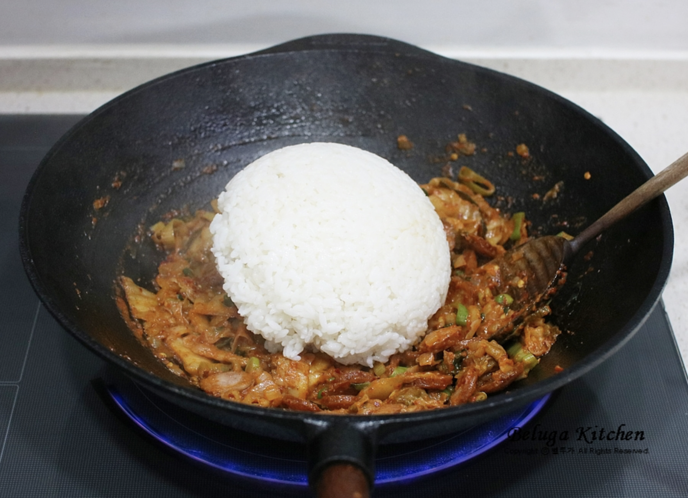

요리법
1)요리재료
재료 : 신김치 1공기, 밥 2공기, 소세지 2개, 대파 1대, 양파 3분의 1개, 들기름 5스푼, 고춧가루 0.5스푼, 설탕 0.5스푼, 진간장 1스푼, 참기름 0.5스푼, 통깨 0.5스푼
2)기본정보
조리시간 : 20분 내외
분량 : 2인분 기준
3)요리과정
01. 대파, 양파, 소세지를 썰어놓는다. 팬에 기름을 5스푼 두른 뒤 소세지를 먼저 볶아준다.
02. 소세지에서 기름이 나오면 대파와 양파를 넣어서 볶아준다.
03. 대파와 양파가 숨이 죽으면 김치를 넣고 설탕과 고춧가루를 넣고 3~4분정도 볶는다.

04. 밥 2공기를 넣고 볶는다.

05. 밥을 한쪽으로 몰고 진간장을 1스푼 넣고 끓인 뒤 밥과 볶아준다. 이후 통깨와 참기름 반큰술을 넣고 섞어준다.